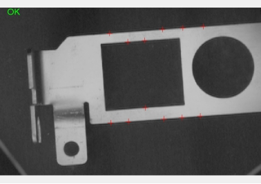
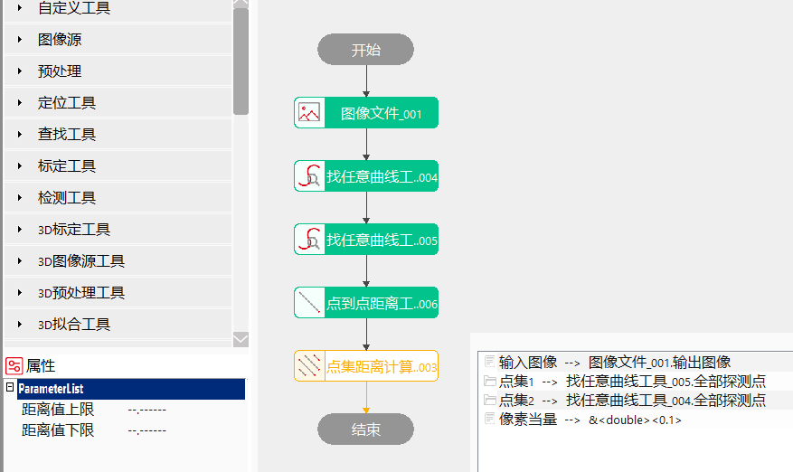
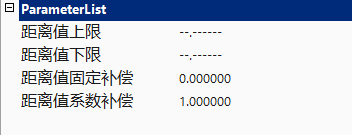
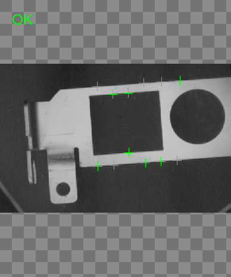
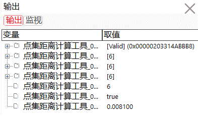

Chức năng chính của công cụ tính khoảng cách tập điểm là tính khoảng cách đường thẳng giữa các điểm tương ứng của hai tập điểm trên ảnh, đồng thời có thể quy đổi khoảng cách trên ảnh thành khoảng cách thực tế.

Thường dùng để kiểm tra khoảng cách từ nhiều vị trí điểm đến đường biên có đáp ứng quy cách hoặc yêu cầu hay không.
Phương pháp tính khoảng cách
Khoảng cách Euclid giữa hai điểm tương ứng trong tập điểm A và tập điểm B, tức là


Giới hạn trên của giá trị khoảng cách, giới hạn dưới của giá trị khoảng cách
Giới hạn phạm vi hợp lệ của tất cả giá trị khoảng cách trong tham số đầu ra tập hợp giá trị khoảng cách, phạm vi giá trị có thể lấy của giới hạn trên và dưới là [0, 999999.999999], ngoài ra có thể thiết lập là "–.——“, biểu thị không giới hạn giới hạn trên hoặc giới hạn dưới của giá trị khoảng cách.
Sau khi sử dụng giới hạn trên của giá trị khoảng cách hoặc/và giới hạn dưới của giá trị khoảng cách để thiết lập phạm vi hợp lệ cho tất cả giá trị khoảng cách trong tập hợp giá trị khoảng cách, thực thi công cụ đo này.
Khi tất cả giá trị khoảng cách trong kết quả đầu ra tập hợp giá trị khoảng cách](#tập hợp giá trị khoảng cách) đều nằm trong phạm vi hợp lệ đã thiết lập, kết quả thực thi công cụ hiển thị thành công; nếu không, khi có bất kỳ giá trị khoảng cách nào không nằm trong phạm vi đã giới hạn, kết quả thực thi công cụ hiển thị thất bại.


| Mô tả hiện tượng |
|---|
| Số điểm của hai tập điểm phải giống nhau, nếu không công cụ sẽ thực thi thất bại. |
| Tên tham số | Mô tả tham số |
|---|---|
| Ảnh đầu vào | Ảnh cần đo khoảng cách từ nhiều điểm đến đường thẳng. |
| Tập điểm 1 | Xuất giá trị tọa độ của từng điểm trong tập điểm 1. |
| Tập điểm 2 | Xuất giá trị tọa độ của từng điểm trong tập điểm 2. |
| Đương lượng pixel | Kích thước vật lý thực tế mà mỗi pixel đại diện, đơn vị mm. |
| Giới hạn trên của giá trị khoảng cách | Phạm vi giá trị [0,999999.999999], ngưỡng giới hạn trên của tham số đầu ra tập hợp giá trị khoảng cách. |
| Giới hạn dưới của giá trị khoảng cách | Phạm vi giá trị [0,999999.999999], ngưỡng giới hạn dưới của tham số đầu ra tập hợp giá trị khoảng cách. |
| Bù cố định giá trị khoảng cách | Bù cố định cho kết quả đo. Thông thường là 0, dùng để bù sai số hệ thống như sai số tạo ảnh. |
| Bù hệ số giá trị khoảng cách | Bù hệ số cho kết quả đo. Thông thường là 1, dùng để bù sai số hệ thống như sai số tạo ảnh. |
| Giao diện nâng cao | Không có |
| Tên tham số | Mô tả tham số |
|---|---|
| Ảnh đầu vào | Xuất chiều rộng, chiều cao và kích thước pixel của ảnh. |
| Tập điểm 1 | Xuất giá trị tọa độ của từng điểm trong tập điểm 1. |
| Tập điểm 2 | Xuất giá trị tọa độ của từng điểm trong tập điểm 2. |
| Tập hợp khoảng cách | Giá trị khoảng cách thực tế giữa các điểm tương ứng (cùng chỉ số) trong hai tập điểm, đơn vị là milimét. |
| Độ dài tập điểm | Tổng số điểm có trong tập điểm. |
| Kết quả thực thi | Kết quả thực thi của công cụ, thực thi thành công hiển thị “OK”, thực thi thất bại hiển thị “NG”, giống với tham số kết quả thực thi trong cửa sổ giám sát. |
| Thời gian thực thi | Thời gian thực thi của công cụ. |
参见“\Samples\点集距离计算工具.gvp”。